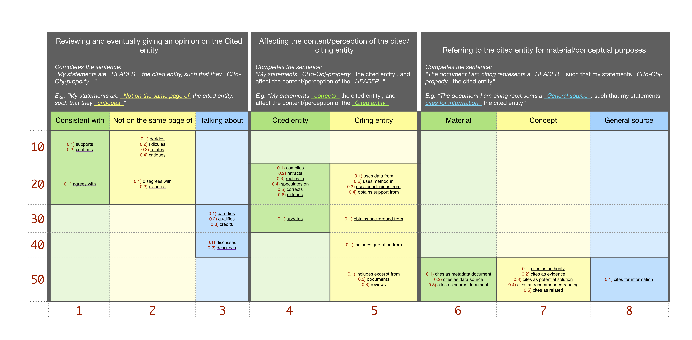

A CiTo classification model
Starting from a retracted article, we discuss a proposed model for annotating the citing entities' in-text citations' reasons using the CiTo ontology object properties, the Citation Typing Ontology (https://sparontologies.github.io/cito).
Overview
The "citation reason" answers the question “Why the citing entity is citing this article?”. The CiTo ontology (https://sparontologies.github.io/cito), is an ontology for the characterization of factual and rhetorical bibliographic citations. Although the CiTo ontology characterizes also the in-text citations lacking an explicit in-text citation pointer, our proposed model will not consider these variants. Instead, we perform the analysis on the in-text citations which appear in the full-text with an in-text citation pointer.
On CiTo the citation reasons are the object properties. Despite the fact that an in-text citation might refer to more than only one precise reason (CiTo object property), our proposed model restricts the decision to only one value. This decision makes the final results more comprehensive and adaptable for future integration in a Linked-Data structure.
Our proposed model is based on a priority ranked strategy. In case we have multiple suitable CiTo object properties, the model helps us decide the one we should finally use and associate with the examined in-text citation. The model is based on the following graphical representation.

How does it work
Given an in-text citation context, our model algorithm follows these steps:
- Reads the examined in-text citation context and finds the most suitable citation intent for it. The model graphic presents 3 macro-blocks, we outline the suitable one/s taking a cue from the macro-block description, its usage, and given examples. Notice that the analyzed in-text citation context might be suitable for more than only one block.
- Once we have chosen a suitable macroblock/s, the algorithm moves toward a deepen selection of the suitable CiTo object property/s. At the end of this phase, we will have a set S of CiTo object properties.
- In case the set S contains only one CiTo object property value. Then the algorithm assigns such value to the examined in-text citation. Otherwise the algorithm takes a decision based on a priority approach as described in the next point.
- To calculate the of a CiTo object property c, the algorithm sums the corresponding y-axis and x-axis values, along with its cell inner value. The smaller a value, the more priority it has. For instance, the priority of c="confirms" is 11.2, while the priority of c="describes" is 43.2, therefore "confirms" has a higher priority. The algorithm calculates the priority of each value in S, and select the one with the higher priority.
Use cases
To clarify the model behaviour, we will consider a real case example and follow the algorithm steps. The following is taken from Fauville et.al(2013)[1], such that it cites the Wakefield et.al(1998) [2] (marked in bold):
"As a consequence, scientific insight is needed to participate in political decision making and a limited understanding can have direct negative consequences on society. For example, the fraudulent publishing about a possible link between measles, mumps and rubella (MMR) vaccine and autism( Wakefield et al. 1998; Deer 2011) received considerable media attention and led to public suspicion and a decreasing percentage of MMR vaccine uptake followed by a measles outbreak in the United Kingdom (Jansen et al. 2003). Issues related to climate change and OA may also be victim to similar risks of simplified and partially incorrect arguments spreading in the public debate."
After step (2) of the algorithm presented in the previous section, our set S will contain the following CiTo object properties:
- “qualifies”: the author is qualifying the cited entity, such that he writes: “the fraudulent publishing about a possible link between measles ...”;
- “discusses”: the author is addressing and discussing the cited article;
- “credits”: the author is giving credit (although in negative), such that he writes: “and led to public suspicion and a decreasing percentage of MMR vaccine uptake followed by a measles outbreak in the United Kingdom”;
- “cites as evidence”: the author is using the cited article as an evidence of something: “... scientific insight is needed to participate in political decision making and a limited understanding can have direct negative consequences on society. For example, ...”
Since S contains more than only 1 value, the algorithm moves to step (4) and calculates the priority of each inner value:
- priority(“qualifies”) = 33.2 = 30(yAxis) + 3(xAxis)+0.2(innerValue),
- priority(“discusses”) = 43.1 = 40(yAxis) + 3(xAxis)+0.1(innerValue),
- priority(“credits”) = 33.3 = 30(yAxis) + 3(xAxis)+0.3(innerValue),
- priority(“cites as evidence”) = 57.2 = 50(yAxis) + 7(xAxis)+0.2(innerValue)
Considering all the priority values, the algorithm selects “qualifies”.
References
- Fauville, G., Säljö, R. & Dupont, S. Impact of ocean acidification on marine ecosystems: educational challenges and innovations. Mar Biol 160, 1863–1874 (2013). https://doi.org/10.1007/s00227-012-1943-4
- Wakefield, A. J., Murch, S. H., Anthony, A., Linnell, J., Casson, D. M., Malik, M., ... & Valentine, A. (1998). RETRACTED: Ileal-lymphoid-nodular hyperplasia, non-specific colitis, and pervasive developmental disorder in children. https://doi.org/10.1016/S0140-6736(97)11096-0